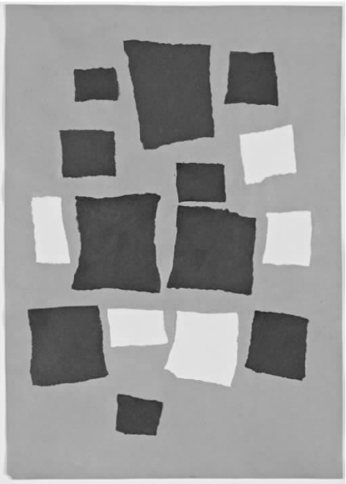
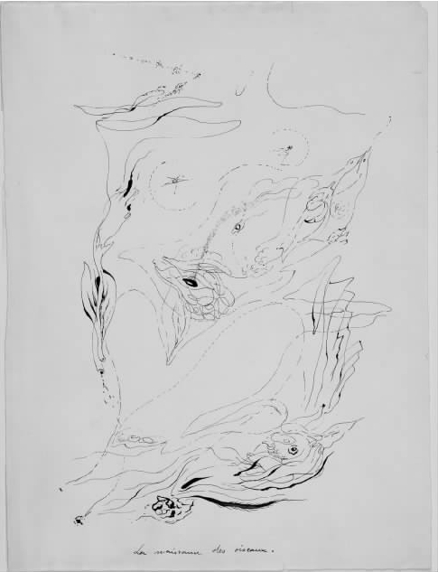
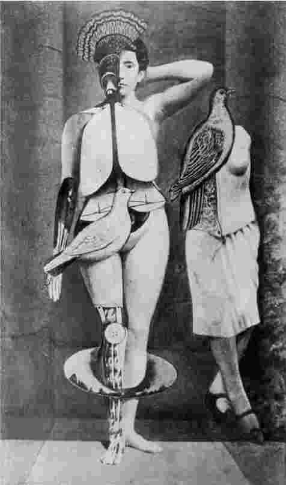
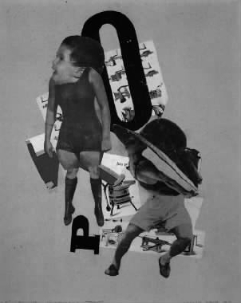
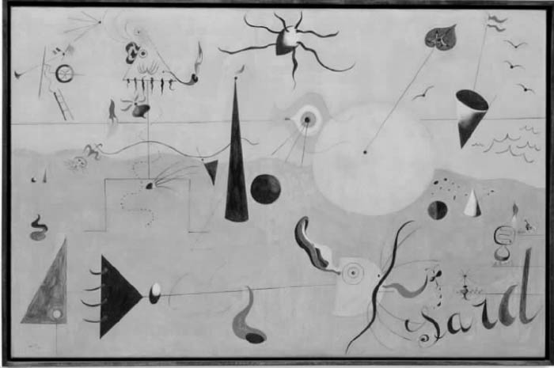
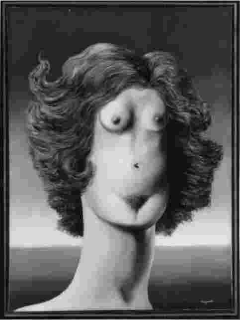
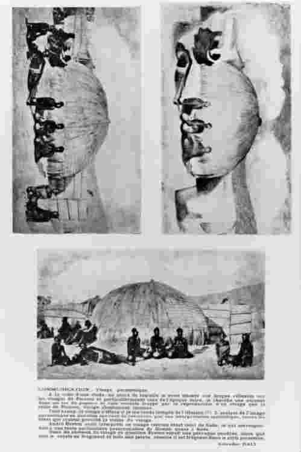
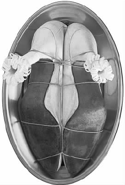
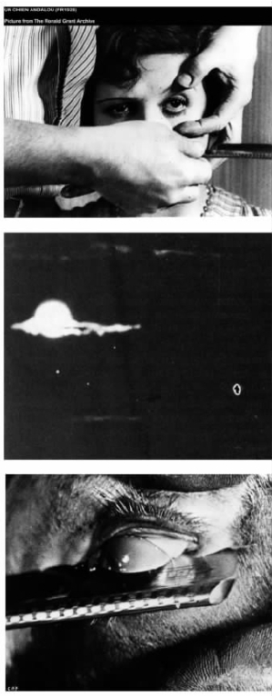

安德烈·布勒东有一次在讨论美学时这样写道，在一个超现实主义者看来，一幅画的创作技巧其实无关紧要，这幅画所探究的精神真实才是最为重要的。
要理解布勒东这种态度的独特性，最好的方法就是参考一下批评家克里门·格林伯格的现代主义美学观，它在超现实主义走向终止的20世纪40年代后期统治着艺术批评。格林伯格强调学科的“纯粹性”。绘画远非面对其他真实而开放，而是被要求作为一种艺术准则来吸引注意力，以处理好绘画固有的问题。格林伯格坚称，这种追求的精确性将导致形式上或审美上的决定在多大程度上奏效。
对达达和超现实主义的大多数实践者来说，学科以及形式的纯粹性是一些令人厌恶的想法。在他们创作的作品中，各种艺术规则不断重叠：文本、视觉以及表演常常处于无拘无束的游戏状态。出于同样的原因，考虑到艺术家所生活的世界，形式美似乎成了无关紧要的追求。无论如何，他们在是否将艺术视为一种由来已久的习惯这一问题上是自相矛盾的，而达达主义者经常发誓要摧毁这一习惯。本章我们在审视达达和超现实主义的艺术及文学作品时，必须时刻将这种对传统艺术和美学纯粹性的根深蒂固的矛盾情绪牢记在心。
格林伯格确实尽自己所能质疑了达达和超现实主义者所代表的一切。在1945年发表的一篇关于超现实主义的论文中，他批评了他所谓的超现实主义的“文学”基础。尽管这种态度现在看起来有些过时，但却仍然引人注目地顽强存在着。超现实主义艺术家如达利和马格里特经常因其作品是“文学的”而遭到诋毁，而达达艺术家又常常因为关注戏谑或幽默的内容而被认为不够严肃。然而，对达达和超现实主义艺术家而言，这种批评其实完全忽略了他们作品的真正含义。他们会因为看起来精通文学，特别是致力于诗意而骄傲自得。达达主义者和超现实主义者就像19世纪的浪漫主义作家和艺术家那样笼统地理解“诗意”这个词，把它看作是一种“灵魂状态”或情感模式，而非一种实践形式。总之，理解达达和超现实主义美学思想的最佳途径不是通过传统的美的理念，而是通过诗意的“态度”。
因为诗歌至高无上，语言或者语言符号，就一直构成了达达主义和超现实主义实践者的作品基础。这一点在下文将变得显而易见。然而，我的首要目标是，利用这两场运动的参与者为获得诗意效果而采用的不同技术和程序上的手段来构建一系列与众不同的差异。达达主义对机遇的利用将同超现实主义对“自动性”的使用展开交锋。达达主义的技巧，例如拼贴和照片蒙太奇将与超现实主义的绘画和摄影技巧相互较量。达达主义的现成品将与超现实主义的物件相对照，如此等等。当然，显而易见的开始之处还是诗歌本身。
宽泛而言，达达主义的诗学可以分为在德国和瑞士流行的以及在法国流行的两大类。在第二章“伏尔泰酒馆”的那一部分，我审视了雨果·巴尔在苏黎世时做出的努力，他试图通过语音诗歌回归“字词的魔力”。这种努力暗示了他拒绝接受语言的符号能力，即它传达意义的能力。巴尔回归到语言的基本单位，可能得益于他对强调语言自主特点的俄国未来派诗歌的了解。但是与完全追求精神“抽象”的诗歌不同（这种描述可能更适用于柏林达达主义者劳乌尔·豪斯曼的语音诗歌），巴尔的诗歌总是传达出一种为事物寻找新名称或发现新字词的神秘欲望。他在日记中写道：“雨下个不停时我们为什么不能把树称为Pluplusch或Pluplubasch？”就这一点而言，巴尔部分地回应了对他这一代艺术家产生重要影响的德国哲学家尼采的观点。尼采曾经写道，他在单词和与之对应的事物之间产生过不搭配的感觉，并把语言视作已经疲惫的“移动的隐喻大军”。其他德国达达主义诗人也对语言的达意能力表达了类似的绝望。在汉诺威，库尔特·舒维特创作了自己的异体语音诗，亲切地把它和他所谓的拼贴中的“莫斯”抽象概念紧密相连，此外他也创作了一些不同语言顺序并存的文本，破坏了总体上的连贯感觉。他的一段诗这样写道：
与之相对，法国的达达主义诗歌，尤其是围绕在《文学》杂志周围的巴黎达达主义者的作品，尽管同样致力于非理性的表达，但是却更加遵从语意的传统。部分原因是由于安德烈·布勒东和保罗·艾吕雅等人更加直接地从兰波或是保罗·鲁（自封为圣——保罗——鲁）等法国象征派诗歌中获取“文学”素材。在下一部分中，我们将看到“自动写作”是他们在技巧上的主要创新，但真正把他们统一在一起的却是他们对诗歌意象所持有的概念。这将是自1924年起超现实主义美学发展起来的核心思想之一。
超现实主义对意象的态度基于相互冲突的现实集合的原则。布勒东将法国立体主义诗人皮埃尔·勒韦迪视为这一技巧的主要理论倡导者，但是有关这一技巧的实践可以在超现实主义许多文学先驱的作品中发现。兰波就在1873年的作品《地狱一季》中描绘了一些幻象，例如“湖底的一间客厅”。
在成熟的超现实主义诗歌中，我们被那些惊人的意象所震撼，例如艾吕雅的“这地球蓝得像一只橘子”，或者是布勒东在《自由联盟》（1931年）中激情洋溢的陈述：
其他超现实主义诗歌极富特色地将令人惊讶的意象并置和无政府主义的幽默结合在一起。邦雅曼·佩雷的一个作品片段是这样的：
他们一直追求的就是对“非凡”的惊鸿一瞥。布勒东一再调用触电产生火星的隐喻来唤起灵感震动，认为毫不相关的意象相互碰撞后会产生那样的震动效果。
显然，与彻底反对从浪漫主义角度解构语言的德国达达和瑞士达达相比，法国达达以及后来的超现实主义致力于一种更为抒情的诗学。当然也有重要的特例。汉斯·阿尔普，这位原本要离开苏黎世投奔巴黎的超现实主义者所创作的诗歌却体现了根植于德国的浪漫主义的抒情性。评论家断言，解构的达达主义诗歌仅仅反映了混乱，而超现实主义由于对传统诗歌的典型风格有所妥协，结果持续时间更长。有些诗歌，如艾吕雅的作品现在看起来形式非常典雅。但是达达主义的语音诗歌，如舒维特在1922年至1932年间创作的著名诗歌《奏鸣曲》，在抽象的内部结构上绝不混乱。这些诗歌影响了1945年以后欧洲象形诗歌和表演美学的发展，与超现实主义那些矫揉造作和陈词滥调的诗作相比，这些诗歌的影响显得更加意味深长。
达达诗歌的分离特征与其作者所支持的相对主义哲学保持一致。特里斯坦·查拉在1918年所作的《达达宣言》中坚称，“客观地说，一件艺术作品决不为任何人呈现美感”。超现实主义者也不相信标准的美的观念，但安德烈·布勒东在其哲理性兼自传性的专题演讲《疯狂的爱》（1937年）中提出了“痉挛美”的观点，用它对口头以及视觉记录的超现实主义意象进行理论归纳。出于对传统美学标准的坚决回避，特别是由于他意欲间接地涵盖文学和视觉艺术两个方面，布勒东在提到美的经历时认为它与一种生理痉挛相类似，伴随着强烈的情欲涌动。他较为晦涩地将超现实主义的“痉挛美”定义为三种类型：“隐藏的性欲”，以生机勃勃同死气沉沉的相互融合为特征（正如珊瑚）；“固定的爆发”，产生于运动向静止的转化（就像在一张枝繁叶茂的植物照片中所看到的那样）和“奇异的间接推测”（因一些表面看来装模作样的用语或物体的奇妙相遇而产生）。
无论如何，这种制定新的美学分类的尝试看起来并不全面，但是却道出了达达和超现实主义的许多差异。对达达主义者而言，不存在任何标准化的美的经历。艺术本身就向质疑开放。相比之下，超现实主义者则培养了一种挥之不去的乌托邦式的渴望，希望诗学和美学在经验上能够完成相互转换或者正在转换之中。
诗歌构成了达达和超现实主义的美学基础，但是究竟这些运动到底产生了何种诗意的语言？它来自哪里？尤其对超现实主义而言有一个答案是明确的，那就是无意识。安德烈·布勒东在1924年发表的《第一次超现实主义宣言》（下文简称《第一次宣言》）中描述道，1919年的一个夜晚他睡得正香，突然一个短句出现在他的脑海中，宛如有人“敲打他的窗户”。不久以后，布勒东就把这种自动涌现出的素材运用到诗歌上，并于1920年和诗人菲利普·苏波一起出版了第一篇完全“自动性”的原始超现实主义文本《磁场》。自动性以这一信念为依据：写作的速度等同于思维的速度，诗人快速写作，头脑中没有任何预设的主题，因此，用布勒东的话来说，就变成了“谦虚的记录装置”。
到1922年，作为所谓“朦胧运动”的一部分，当巴黎达达逐渐变质转向超现实主义时，布勒东和他的朋友用更引人注目的方法进行实验，绕开意识的控制。在一段时间里，他们当中的某个人或另一个人自愿进入神情恍惚、昏昏欲睡的状态，并接受其他组员的提问。诗人罗贝尔·德斯诺斯对这种状态特别敏感，有一次令人恐怖地回答了诗人邦雅曼·佩雷的提问。
最后，这些催眠就要失控。有一次，诗人勒内·克勒韦尔企图用它来引导一次集体自杀，最终这些催眠活动被放弃了。自动性逐渐被认为反映了精神病学和心理分析的发现。布勒东最初将这些学科曝光是在1916年，当时他正作为医疗勤务兵在军中服役，运用弗洛伊德的自由联想技术在一群患炮弹休克综合征的士兵身上进行试验。但是，并不是弗洛伊德为自动性提供了理论模式，而是法国精神病学家皮埃尔·雅内在1889年的《自动性心理学》一书中大量记录了病人进入睡眠状态后的思维喷涌。不过，皮埃尔·雅内却不太看重病人的创造性意志，因而到1924年，当布勒东在《第一次宣言》中将自动性视为超现实主义的首要技巧时，是弗洛伊德的自由联想对他产生了更为显著的影响。
超现实主义的自动性是以抑制理性意识为基础的。但是，应该强调的是，它并不总被用到超现实主义写作的创造之中；我们在上一节摘引的许多超现实主义诗歌只是部分地运用了它。同样，也不应假定它完全是由超现实主义发明出来的，皮卡比亚、查拉、阿尔普和舒维特等人在更早一些的达达诗歌中其实也采取了类似的创作手法，只是阿尔普将形式和思想都视为诗歌创作的源泉所在：“自动性诗歌直接由诗人的内脏或其他具备存储能力的器官排放出来……它随性而为，时而欢呼，时而咒骂，时而结巴，时而颂吟。”我们可以争辩说自动性是达达主义者日常使用的，此后才由超现实主义者在精神分析方面建立了理论。的确，如果我们转而来看达达主义者，尤其是苏黎世的达达主义者在理解如何放弃创造性控制时，更多的是与机遇相一致而不是偏好自动性，那么我们就会发现达达主义和超现实主义在美学观点上存在着某些明显的差别。
1916年至1917年左右，苏黎世达达最主要的视觉艺术家阿尔普及其伴侣苏菲·达厄贝一起创作了一系列的抽象作品。在这些作品中，方纸片被精确地拼贴到纸张的网格上。当时这些作品和蒙德里安及康定斯基的画作一起参与了视觉抽象概念在欧洲艺术中广泛传播的初始阶段。然而，更能体现别具一格的达达特色的是阿尔普在这些极其精准的作品中使用直接对位法创作出来的一些拼贴。在这些作品中，阿尔普随意将纸片洒落在衬纸板上，并把它们一一固定在掉落的位置上（图15）。稍后他声称这些作品都是按照“机会定律”制作出来的。
稍早些时候，当时正在巴黎但很快就将搬到纽约去追求自己的“达达版本”的马塞尔·杜尚也创作了可与阿尔普相媲美的作品。他在开始创作玻璃杰作《甚至，新娘也被她的男人剥得精光》时，本打算对失落的欲望进行图表般的描述，把一群用机械装置做成的“单身汉”放在作品的底部，以反衬位于作品顶部的“新娘”。他抛下了三根线，将它们落下时的形状“固定住”，依此制作了模版，把它们视为标准的变异。那时，他使用了这些“标准中止”（他这样来称呼它们）来帮助确定《大玻璃》中单身汉们的位置，暗示他的作品是不同于外部现实的非理性的物理法则。
阿尔普和杜尚都急于摆脱其时盛行的将作者控制等同于艺术创作的模式。他们还提倡以20世纪的随机艺术传统为基础同时又富有自身特色的一种达达态度，并吸纳了作曲家约翰·凯奇等人的观点。对我们现在的讨论更重要的是，这两位艺术家都在调用一种非个人或以自然为基础的创作过程，以反对人为的心理导向，尽管这对于杜尚的作品来说多少有些讽刺意味。从本质上而言，阿尔普对自己行为的理解多少带有点儿神秘主义色彩。在他看来机会同自然相联，是“深不可测的存在的理由的一部分……是总数中无法获得的一个顺序”。超现实主义对个体精神颇感兴趣，而达达主义者却祈盼获得一种完全独立的力量。他们怀疑人的自负，也不相信对人类理智的过高估量：一场世界大战就是由这些价值观引发的。同样，他们对弗洛伊德非理性的系统化也不大赞同。特里斯坦·查拉把精神分析描述成一种“危险的疾病”，它麻痹我们反现实的倾向，帮助资产阶级社会永垂不朽。达达主义者之所以不信任弗洛伊德是因为他期望可以驯服无意识，而不是任由它自由地批评社会。因而他们也怀疑以弗洛伊德理论为基础的超现实主义的自动性，尽管需要强调的是，超现实主义者把弗洛伊德当成是探索无意识机制的人，而不是让他去“治疗”无意识机制所引起的疾病。

图15 汉斯·阿尔普：《按照机会定律排列的长方形，拼贴》，1916/1917年，纽约现代艺术博物馆。
将达达主义对机会的理解和超现实主义对自动性的理解放在一起加以比较以显示二者之间的冲突时，我们的参照点需从诗意转向视觉。这与我们此前提及的达达和超现实主义在文学美学和视觉美学之间持续的转型是一致的。如果我们现在转而研究一下超现实主义的视觉艺术，就会有趣地发现，当文字上的自动性在某些艺术家的技术革新中找到对等物时，达达主义的机会论也被巧妙地吸收进了超现实主义的创作程序之中。
1924年至1925年间，法国画家安德烈·马松试图寻找与布勒东在《第一次宣言》中所倡导的“自动性”相应的视觉对等物，他创作了一系列重要的“自动绘画”。当他预先未作设想而是快速描画时，一系列极端个性化的意象，如充满情欲的躯体、动物和建筑图形被诗意地融合在一起。这些睿智的涂鸦最初可能显得有些抽象，但超现实主义者从来不像我们在阿尔普的作品中所看到的那样允许自己迈向完全的抽象。只要稍加努力，我们就可以比较明确地把马松于1925年创作的《鸟的诞生》看作是女性的身体，一群鸟正从阴户中飞出。
稍后于马松，出生于德国、新近从科隆搬到巴黎的艺术家马克斯·恩斯特用他1925年的“擦印画”对《第一次宣言》做出了类似的回应。艺术家在凸起的表面（如木质纹理）上覆盖几张纸，进行拓印。然后他让这些外形来展示自己，或者遮挡住或者再次强调这些形象的某些部分以呈现一幅极富个性的动植物图像。恩斯特将这一整套作品拍成照片并命名为《自然历史》出版。有趣的是，作为一名曾经参与过达达运动的成员，恩斯特在其创作过程中的状态比马松更为消极。他回顾了曾经被达达内部所理解的客观的机会原则，尽管他直接的灵感更多源于达·芬奇，后者在《论绘画》中曾建议艺术家应该运用杂乱无章的涂抹来触发自己的创作灵感。

图16 安德烈·马松，《鸟的诞生》，自动绘画，约1925年，纽约现代艺术博物馆。
恩斯特很聪明地把达达主义的机会和超现实主义的自动性结合在一起，对无意识的命令作出回答。他的事例揭示了超现实主义美学如何时常微妙地回到达达。超现实主义者将设计许多从心理学角度来分析机会的其他方法，他们其实一直在按照我们在上一章所论及的“客观机会”的原则来生活。但是人们也想知道在最终的分析之中，超现实主义是否成功教化了达达本来的无政府的非人性原则，使之变得驯服起来。
我们在谈论达达和超现实主义的视觉艺术时，有必要从艺术媒介和技巧方法的角度来更进一步地表明这两个流派之间的差异。只要回到马克斯·恩斯特，我们就可以建立最初的对比。无论如何，他在这两个流派之间建立了联系，从达达主义的拼贴使用转向了独特的超现实主义绘画模式。
1921年，巴黎的达达主义者了解了恩斯特在科隆的一些活动之后，邀请他在巴黎的“同样的道理”画廊举办了一次拼贴画展，令巴黎人大开眼界。如果说布勒东和苏波的《磁场》预示了文本意义上的超现实主义，那么这次画展实际上是在视觉超现实主义上先发制人。很快恩斯特就将加入这一团体，并创作出与其理论相符的作品，例如前面曾提到的“擦印画”。
那么恩斯特的达达拼贴到底有什么重要意义呢？拼贴作为先锋派技巧此时已臻完善。成块的油布、墙纸以及诸如此类的东西已经被毕加索和布拉克广泛地运用到1912年至1914年间所谓的“立体主义合成阶段”的绘画之中，并在很大程度上把对现实世界的睿智影射重新引入到这些越来越抽象的绘画之中。恩斯特却用一些可识别的形象碎片组成了自己的拼贴，将百科全书插图、商业单据、解剖学论文和照片的碎片并置，从而产生了令人困惑的相反的现实。例如在1921年的《圣诞谈话》中，恩斯特将鸟的插图、部分的解剖图和照片搭配在一起组合成照片，构成了一幅半幻觉的画面空间。《圣诞谈话》的标题就暗示了宗教肖像画法，即圣母、圣子和圣徒这个传统主题。该画描绘了一只鸽子栖息在主要人物的盆状“子宫”上，以此亵渎神明似的激发了“童贞女分娩”的想象。
恩斯特在“朦胧运动”发展到高潮之时来到巴黎，随即开始着手将拼贴转变成具备画家特征的作品。1919年意大利画家乔治·德·基里科的插图作品曾经给恩斯特留下了深刻印象。基里科在巴黎时曾在多产的1911年至1915年间发展了一种“形而上学”的绘画模式。他想象在一个傍晚笼罩在诡异光线下的偏僻意大利广场上，雕塑投射在地面上的影子长而忧郁。基里科在绘制这些幻景时所运用的“伪天真”风格包括了令人眩晕的后退透视法，同时他还孜孜不倦地用精美的黑线锁住色彩单调的图形。这些为恩斯特提供了具有画家特征的语汇，他用它们来再现拼贴中令人惊奇的并置。在基里科的影响之下，某些拼贴中半迷幻色彩的暗示发展成对可触知的精神宇宙的暗示。恩斯特在1922年至1924年间创作的一系列作品，包括《俄狄浦斯·雷克斯，对这个男人我们应一无所知》和《圣母怜子》（图4）成了超现实主义视觉艺术的基础。

图17 《圣诞谈话》，拼贴，1921年。
可以说，达达拼贴被转变成超现实主义绘画的过程类似于达达主义的机会逐渐依附于自动性的过程。由恩斯特在科隆使用的拼贴唤起了一个对人类控制怀有深刻敌意的世界；整个思想体系似乎与表现体制相抵触。但是1921年布勒东在为“同样的道理”展览编写的目录中提到恩斯特的拼贴时却将这种技巧与原始超现实主义诗学相联系，并运用他所偏爱的两个现实遭遇以后产生大量火花的隐喻来强调恩斯特的效果。当恩斯特在20世纪20年代初期开始从事他所谓的彻底“超现实主义”的绘画创作时，部分得益于布勒东的支持，他重新使用了一种技巧，即油画技巧。因为油画蕴含了传统和精英主义的思想，所以它一直是被达达主义者所禁止的。
将达达原则加以稀释之后的感觉可以通过将达达主义的另一项技巧——照片蒙太奇和超现实主义绘画相比较而得到强化。照片蒙太奇是柏林达达出类拔萃的视觉革新成果。柏林的两个派别，豪斯曼——赫希派和格罗兹——赫茨菲尔德——哈特菲尔德派都声称是自己首先“发现”了这一创新思想，但是我们在此无须拘泥于这场争论。不过重要的是，我们要辨别柏林达达团体的照片蒙太奇和上一节讨论过的恩斯特的照片拼贴之间的区别。恩斯特很少安排明显的社会参照物。他的作品暗示了思维或是思想体系的非理性的冲突。为了达到这个目的，他忽视素材的物质特性而是将他的拼贴组合好后重新拍照，从而使这些照片产生了天衣无缝的效果。相较之下，柏林的照片蒙太奇则是高度政治化的，裁剪和重新组合报纸和杂志上的形象本身就暗含了切割社会现实结构的用意。柏林的照片蒙太奇把建构这些形象的物理过程展示了出来——意象的碎片特性以及它们在照片比例上的不协调等等都会在最后的成品中展现出来。我们在汉娜·赫希于1919年创作的《资产阶级婚侣——争吵》中可以看到一些幽默的意象内容。该图戏仿了一场资产阶级婚礼，其中一对身穿运动服的貌似婴儿的夫妇在一堆最新潮的家用电器中私下里忍受着创伤。整幅画让人感觉这些还是从印刷品上剪下来的碎片。
我们转过来再看超现实主义绘画。很明显，作为一种“亲笔而为”的技巧，换句话说，艺术家的画笔所产生的每一个印记都表达了他或她的“触觉”，我们很难说这种绘画可以像柏林的照片蒙太奇那样意味着社会互动或交换。尽管豪斯曼有一次在柏林谈及他的同辈艺术家时将他们称为“照片集中人”，认为他们就像建筑工人一样把自己的图画拼装在一起，但相形之下，超现实主义的绘画还是充满了个人的幻想和艺术家的天赋，从本质上而言，它缺少达达的政治敏锐。

图18 汉娜·赫希，《资产阶级婚侣——争吵》，照片蒙太奇，1919年。
超现实主义绘画在内部受到了一定的质疑。1925年布勒东称其为“令人遗憾的权宜之计”，而艺术家需要说服自己才能运用它。所以几乎是从一开始它就出现了分化。一方面是不加过滤直接描绘梦境的绘画模式，在这种模式中，非理性的可供替代的现实通过假学院派式的精确被描述了出来。这一倾向源于乔治·德·基里科，同时也受到法国19世纪象征主义画家奥迪隆·雷东和古斯塔夫·莫罗等人的影响。为了方便起见，它往往被授予“梦之绘画”的称号，尽管在后面即将出现的恩斯特和达利的例子里，我们会发现他们在创作中更多使用的还是弗洛伊德的病例史而不是个人的梦境。
另一方面，还存在着“自动”绘画，它们以即性的具有画家特征的标记或斑点为特色，以便暗示形状，安德烈·马松等艺术家对之进行了实践。此前我们曾提及与马松相关的“自动绘画”。从布勒东的理论来看，这一技巧可被称作更为真实的“超现实主义”。
与马松一样，胡安·米罗是这个“自动”派别的一个关键人物。1920年至1921年间，他从故乡加泰罗尼亚移居巴黎之后，率先在一些作品如《猎人》（图19，1923——1924年）中形成了一种非常奇异的图画文字语言。在画的左上端，标题中出现的“猎人”被描绘成一个棍状人，他大得离谱的耳朵和一颗看起来正在“着火”的心显示了他的机警。画布的底部是他的猎物——一只特别的“沙丁鱼兼兔子”。随后米罗的所有作品都会以这种反复无常的诗意转变为特色。从一幅画到另一幅画，视觉符号经历着持续不断的质变。他在20世纪20年代中期所使用的自动性——有时是在设计作品时，有时是在类似《世界之诞生》（1925年）那样的重要作品中将其视为最终结果的一部分时——完美地契合了他流动的创作方法。

图19 胡安·米罗，《猎人》，布面油画，1924年，纽约现代艺术博物馆。
正如前面已暗示的，绘画在超现实主义理论家那里度过了一段艰难时光。就在《第一次宣言》发表之后，作家马克斯·莫里斯写了一篇散文《着魔的凝视》，对“梦之绘画”表示怀疑。在他看来，这些作品既不能表达现实世界也不能展示梦的本性。而我们下面将看到的电影则具备了从事此项工作的能力，电影生产过程中的“第二次修订”为无意识设置了障碍。1926年4月，时任超现实主义杂志《超现实主义革命》编辑的皮埃尔·纳维尔更为戏剧性地宣称：“每个人都清楚根本没有什么超现实主义绘画。”甚至就连具有画家特征的自动性也受到了质疑，因为一些美学习惯，如构图平衡感，都会阻碍彻底的自发性。
布勒东挺身而出为绘画辩护。他在20世纪20年代后期写了一系列的文章和目录介绍，诗意地拥护法国画家伊夫·唐居伊等人，他尤其崇拜他们的作品中用奇异的生物形态表现出来的梦境。但是布勒东从来没有彻底为超现实主义绘画进行理论上的辩护，他最后将收集了这些文章的文集明确冠名为《超现实主义和绘画》。布勒东肯定了德·基里科或毕加索等超现实主义先驱的重要性，尤其有很长一段时间，布勒东一直试图讨好毕加索但未能如愿。超现实主义在性和暴力的幻想中流露出的放荡不羁无疑也使毕加索焕发了精神，促使他创作了20世纪二三十年代的作品。但是布勒东在支持米罗和马松等人时摇摆不定。与超现实主义中不断增多的马克思主义观点一致，布勒东一贯坚持的批评论点是，画家太容易屈从于职业所产生的诱惑，而且太急于从商业利益中获取好处。超现实主义相对而言的后来者，比利时画家勒内·马格里特采用了较为学术的技巧，有可能导致折中，但是马格里特在最佳作品中用来展示幻象或哲学谜语的彻底写实主义又很明显地给这些作品增加了毫不妥协的敏锐（图20）。另一方面，萨尔瓦多·达利于1929年从家乡加泰罗尼亚戏剧性地进入巴黎团体，他的技能将会证实布勒东所有的恐惧。
达利的早期超现实主义绘画如1929年创作的《悲伤的游戏》和《了不起的手淫者》都极具创造性。这些绘画中被布勒东称为“极端倒退”的技巧完全适于实现心理病态者的幻想。它们经常从弗洛伊德或是19世纪后期的“性学专家”理查德·冯·克拉夫特-埃宾那里大批大批地精选文学素材。达利在20世纪30年代早期还为巩固视觉超现实主义的理论资源做了不少工作，并创造了他所谓的“偏执的批判方法”。1931年达利在向杂志《为革命服务的超现实主义》投稿时，在稿件里复制了一张明信片，明信片上展示的是一群非洲人坐在草棚前，如果把照片侧转过来，人们就会看到一个幽灵样的头颅（图21）。正如临床偏执狂痴迷于重新解释外部现象一样，达利在他20世纪30年代创作的油画中熟练地创造了双重意象，用他自己的话来说就是创造“言而无信的现实”。然而，最终由于这种技巧倾向于风格主义，同时由于达利不可避免地吸引了富有的赞助人如英国收藏家爱德华·詹姆斯的注意，所以他这方面的独创活动逐渐减少。布勒东曾为他创造了一个著名的相同字母异序词“渴望美元”，他终于名副其实了。
绘画最终成为了超现实主义的阿喀琉斯之踵。它存在两个主要缺陷：在自动性形式上它向其美学前提妥协了；在十分学术化的现实主义层面上，它追求资产阶级的品味。可以说，法国艺术家皮埃尔·罗伊或是比利时的保罗·德尔沃慢条斯理的超现实方案其实并不比学院派强到哪里。
如果说绘画未能与超现实主义的抱负相吻合，那就值得让“纯照片”（与照片蒙太奇相对）来试试它的运气。在这本书中，我打算像超现实主义者所做的那样，用摄影来记录他们的观点以便突出其作为一种艺术形式应有的地位，但是这样做很容易被人断言，摄影构成了超现实主义的卓越媒介。摄影是一种机械媒介意味着它是一个“谦虚的记录装置”，这个词组使人回想起布勒东对超现实主义诗人所作的描述。这个装置的特别之处在于它能自动转录根植于现实的超现实。回忆一下在《第二次超现实主义宣言》中布勒东的理想是现实和超现实融合，这一点是很重要的。达利则正好相反，用他自己的话来说，他试图“让混乱变得系统化”。

图20 勒内·马格里特，《强奸》，布面油画，1934年。

图21 萨尔瓦多·达利，《偏执狂的脸》，选自《为革命服务的超现实主义》的版面，第三期（1931年12月）。
摄影本质上是超现实主义的。正如苏珊·桑塔格所说的那样：“超现实主义位于摄影事业的核心：它在一个副本世界的创造物之中，是第二层次的现实，虽然较为狭窄，但是比自然观察到的景象更令人吃惊。”一台照相机常常是完全偶然地捕捉到一些离奇的细节，从而使我们从熟悉的事物上感受到陌生。超现实主义者自己当然会充分利用这一点。例如，布勒东曾让摄影师J.——A.博依法德为他的小说《娜嘉》提供一些看起来平淡无奇的巴黎场景的照片。但正如前文所述，在这本记录爱情故事的小说里，情人间的感情，更不用说娜嘉最初的癫狂，在日常生活中提炼出了机会启示。
超现实主义无疑在舞台“艺术”摄影中占有一定的份额，其中出类拔萃的是前纽约达达主义者曼·雷矫揉造作的工作室机制。和恩斯特一样，雷在超现实主义的形成阶段也曾被吸引到巴黎。雷将他那令人敬畏的工作室技巧用于创造诱人的、经典造型的、带有浓厚恋物色彩的女性身体上（图26）。照片的处理技巧也被广为实践。在冲印“雷氏相片”的过程中，雷再一次发挥了重要作用。在这些相片的冲印过程中，物体被放在暗房的胶片上，然后一起曝光，这样就在底片上留下了鬼一样的影子。此外还有“太阳辐射化”，即在显影过程中简短而又快速地打开暗房的灯源，这样就围绕摄影图形留下了一圈光环。
这种摄影处理技巧还延伸到其他工序之中，如对底片的双重曝光以及将底片叠加或结合从而产生那种内部撕裂且“双重”的图像。由曼·雷或法国摄影师莫里斯·塔巴尔推行的这些工序在美国艺术史学家罗瑟琳·克劳斯看来特别适合超现实主义。它们似乎想暗示，这个表面上看来被摄影的机械特性所记录的现实在本质上并不稳定：仅仅是一些移动符号的集合，像一个文本。这种观点可能会再次提醒我们注意到达达和超现实主义美学观的诗学基础。然而，尽管克劳斯提出了论据，正如前文已暗示的那样，也许只有当摄影很少矫揉造作、附庸风雅时它才是真正的超现实的。如果说超现实主义绘画同达达主义的拼贴和照片蒙太奇相比多少显得有一些墨守陈规，那么摄影则显然是一个“自动性”的超现实主义媒介。虽然超现实主义绘画的遗产相对令人失望，至少在它成长的欧洲国家产生了大批效仿者而非继承者，但是20世纪中叶摄影界的一些重要人物，如亨利·卡蒂埃－布雷松、布拉塞、比尔·布兰特和安德烈·柯特兹都曾受到超现实主义决定性的影响。
在超现实主义内部，与摄影相比绘画也许会倍受煎熬，但它至少幸存了下来。相比之下，传统意义上的雕塑在达达和超现实主义中都并不起眼，而且一种新的三维产品，即物品还篡夺了它的位置。这一历史性的开端始于杜尚和他的“现成品”。其中最臭名昭著的当属他于1917年在纽约创作的《泉》，这件作品已被讨论过，但是这并不是杜尚第一次将未生产出的现成的物品（因而是“现成品”）挪用到自己的创作之中。杜尚于1913年移居美国之前在巴黎所作的《自行车轮》才算得上是“现成品”的开山之作。它其实由两个相连的部分组成：自行车的前叉和车轮以及一个木制的凳子。自行车的前叉和车轮被倒过来嵌进凳子里，从而塑造了一个立于“基座”上的可以转动的“雕塑”。
很显然，从以上描述中我们可以发现，尽管具有讽刺意味，但《自行车轮》却挪用了传统的雕塑术语。这个物品隐讳地戏仿了传统的雕塑，因而质疑了底座和雕塑品的等级分裂。凳子和车轮一样都是可用的物品，因此这件作品的各个组成部分就变得平等了。杜尚使物品从艺术的等级划分中脱离了出来，与此同时还嘲讽地对它们进行了再次审美。尽管毕加索已经在其1912年创作的《带藤条的椅子静物画》中使用了油布和绳子，但用实物取代被雕塑的外形无疑体现了对传统的大规模挑战。与柏林达达主义者在照片蒙太奇中所作的尝试一样，现成品也试图将艺术从为人熟知的材料中清除出去，使其与工业化大生产的世界相契合。
也许《自行车轮》所提出的最重要挑战还是作者身份。正如杜尚在其后创作的一系列现成品一样，《自行车轮》对艺术的本质提出了根本的疑问。杜尚曾经说过，如果从词源学的角度来说，艺术意味着“制造”，那么他已将自己从这一束缚中彻底拯救出来了。
直到1917年《泉》（图3）的照片发表以后杜尚才将现成品变为一种观念上的挑衅。在这之前，物品都是作为私人的“哲学玩具”而被挑选的。对《自行车轮》来说，现成品已经不一定仅仅是物品了。到了20世纪20年代早期，也许是为了记录处于萌芽阶段的巴黎达达团体的文学思虑，杜尚精心制作了富有诗意的“辅助现成品”，如《新寡妇》（1920年）：一对价廉质次的法式窗户，上面发光的黑色小皮革方块取代了窗格上的玻璃。在这儿，标题和物品之间的互动至关重要，它使我们再次想起了达达和超现实主义美学的言语基础。如果大声读出标题，它中间的两个单词都抑制了字母“n”，引发了包括施虐受虐在内的一系列自由放纵的联想。当时身在纽约的曼·雷与杜尚志同道合，分享了他朋友的黑色幽默。在他1921年创作的《礼物》中，一排大头针气势汹汹地从一个扁平熨斗的底部戳了出来。达达通过类似的装配为自己在巴黎的超现实主义者中赢得了一个传奇地位。
1924年，超现实主义领袖布勒东写了一篇重要文章《论现实的贫乏演讲入门》，在其中讨论了自己在梦境中遇到的一本神秘的书。
他坚定地认为这些物体应该流通开来以“质疑‘理性’的生物或事情”。他的这种看法在超现实主义内部成为制作“象征性功能的物品”的先兆。然而，这一阶段将不得不等到1931年才会出现。
直接的催化剂是瑞士艺术家阿尔贝托·贾科梅蒂所做的雕塑。1922年在巴黎定居的贾科梅蒂是超现实主义轨道中一位传统的雕塑家。他在1930年至1931年间创作的《无题》（《悬挂的球》）是一个谜一样的构造，其中一个石膏制成的圆球被悬挂在笼状的构造物里，球面刚好掠过下面一个石膏制的月牙状物体的锋利边缘。当作品的照片被刊登在杂志《为革命服务的超现实主义》上时，它在超现实主义团体中产生了巨大的影响。特别是布勒东，他赞扬它营造出了一种欲求无法得到满足的气氛。
在其后的物品制造大潮中，产生了一些很是引人注目的超现实主义视觉艺术作品。达利用一套带有恋物色彩的精巧装置超越了自我。他是这样描述的：
过了一段时间以后，这一群雕塑家又创造了不那么复杂的物品。《皮毛早餐》表现的是一套用皮毛镶边的茶杯和茶碟，由出生于瑞士的女艺术家梅雷·奥本海姆完成——她也是在这一阶段的超现实主义发展过程中扮演重要角色的少数几位女艺术家之一。这一作品可能是这一批作品中最知名的，同时也是1936年在查尔斯·拉顿的巴黎画廊举办的重要的超现实主义物品展览中最引人注目的一个。但《皮毛早餐》过于让人熟知了。奥本海姆的另一幅重要作品是《我的保姆》。这幅作品也臭名昭著地使用了鞋这一富有恋物色彩的物品。推测一下奥本海姆和达利对鞋的不同使用方式是非常有趣的，但条件是，尽管奥本海姆的组合似乎表达了正好相反的意思，心理学家还是普遍不愿承认这种女性恋物癖的存在。奥本海姆曾经发现鞋子可以唤起“大腿被快乐地挤压着”的想法，很久以后她发现那种想法源自童年时期自己的保姆身上散发出的“耽于肉欲的气氛”。也许她在此是在反讽与女性恋物癖有关的所有问题。女性恋物癖如果真的存在，那也是基于男性恋物癖的心理机能，后者一般被认为是以异性恋为基础的。达利的物品无疑是支持这一观点的。当然奥本海姆的注释不止一处地流露出一丝女同性恋的幻想。我们很容易从一双被捆绑在一起的鞋子——两只绑在一起就像是一只摆放在大浅盘里的火鸡——那样的形象中察觉艺术家所表露出的以捆绑寻求快感的性虐待幻想。
如果我们重新回到达达和超现实主义之间的对比，我们可以进一步比较奥本海姆的《我的保姆》和杜尚的《泉》（图3）那样的现成品。很明显，奥本海姆的超现实主义物品公开坚持它的心理内容，而达达的现成品则静静地等待着我们的解释。实际上《泉》曾被解释为一种双性形态，底座的曲线和洞眼其实是“女性”在另一种“男性”容器中的曲折变化。如果这个现成品可以讽刺性地被视为是可用的，如果它没有暂时被命名为“艺术”，那么超现实主义物品也可以把自己毫无用处的东西变成某种具有潜在价值的事物。20世纪二三十年代，超现实主义转向浪漫潮流，乔治·巴塔耶是超现实主义的主要评论家，他在嘲讽美学的无能为力时宣称：“我向任何一位像恋物癖者爱好一只鞋子那样热爱油画的艺术爱好者提出挑战。”这样看来，《我的保姆》可被看作是恰好满足了恋物情感的需要而非艺术的需求。

图22 梅雷·奥本海姆，《我的保姆》，金属盘、鞋、线和纸，1936年。
这种比较明确了达达主义美学观和超现实主义美学观的分歧。现成品的目的在于瓦解艺术与非艺术之间的区别，它含蓄地承认艺术可以用自己的方式来质疑。相反，超现实主义的物品无论产生多么大的变化，还是遵从了艺术惯例，实现了一种新的经验性的功能。
没有什么可以比布勒东在《疯狂的爱》（1937年）中所叙述的一个著名事例更能有力地阐明超现实主义物品所起到的催化作用。布勒东谈到了阿尔贝托·贾科梅蒂在创作此后被称作《看不见的物体》的雕塑的头部时所面临的一次明显的心理障碍。有一次他和布勒东去巴黎的跳蚤市场进行熟悉的超现实主义搜罗，结果他们被一个奇特的金属半面具莫名奇妙地吸引住了，后来他们认出这个半面具原本是一个击剑面具。贾科梅蒂后来意识到这个面具的形状为他完成头部雕塑提供了一种解决方案。这里布勒东并没有认为超现实主义的物品更接近杜尚的现成品——“随手拾来的物品”，这个“随手拾来的物品”神秘地与“客观机会”的要求相吻合。他的观点是，贾科梅蒂的无意识欲望有效地诱使他找到了这个物品。布勒东用一种类比的方法发现了浪漫的爱的功效。但在某种意义上，超现实主义物品的任务就是呈现这样一种毫无必要的探求并且直接对我们的欲望发话。至少在理论上它可以使我们完全超出审美范畴。
当达达主义者试图质疑或重新界定艺术时，他们反讽地创造了新的艺术形式（如现成品）。超现实主义者则很少关注类似的艺术媒介，而是相信诗意的内容使形式问题变得无关紧要。他们用一种别具特色的“先锋”方式，试图将艺术融入生活。关于先锋派的定义我们在第一章一开始就已经讨论过了。
要强调这一区别的一种方法是转而去看最终这些运动是如何利用电影的。作为一种传播媒介，电影直到1895年至1896年间才出现。当卢米埃尔兄弟展示他们的发明时，在他们所使用过的所有媒介中电影无疑是最“现代”的。苏黎世的汉斯·里希特和维金·埃格林或巴黎的勒内·克莱尔和曼·雷制作的达达电影，或者达利和布努艾尔的超现实主义电影都是20世纪前几十年间巨大的电影实验浪潮的一部分。这些实验电影曾经极度依赖先锋艺术运动所取得的成就。
准确地说达达主义电影的特点是，它刻意强调电影的物质本性并且思考该如何强迫电影观众理解这一事实。出生于德国的里希特和出生于瑞典的埃格林当时在苏黎世的达达团体中属于相对的后来者而且是较为次要的角色。他们在1919年至1921年间通力合作，率先探索了抽象电影。1925年去世的埃格林生前费尽心血地创作出《斜线交响乐》这部主要作品，其中的抽象形式唤起了音乐模式和乐谱。里希特的作品同样也对音乐作出了回应，但是在视觉方面更具开创性。例如在他的《节奏23》（1923年）中，一连串长方形融合在一起又被分开，在这一过程中这些图形不断扩展或退缩。
由于达达内部总体上存在的分歧，以苏黎世为大本营的电影人的抽象倾向和在巴黎制作的更加注重表现反资产阶级内容的达达电影形成对比。苏黎世的电影人也正是由于这方面的原因而最终同国际建构主义走到了一起。也许这些电影中最有意义的一部是勒内·克莱尔1924年运用叙事传统制作的《幕间曲》，但是按照当时好莱坞无声电影的叙述方式，这部电影的故事情节是很不“连贯”的。克莱尔电影的叙事总是不断地被令人吃惊的斜移镜头、叠加的图像和忽快忽慢的拍摄速度所扰乱。通过引人注目的镜头并置而在观众中造成强烈的情感效果或智力挑战的蒙太奇技巧也被运用在这些影片中，但是克莱尔没有死板参照谢尔盖·爱森斯坦等苏联电影理论家的流行做法，他对摄影形式的关注一直受制于他的合作者弗朗西斯·皮卡比亚。此时巴黎达达已经气数殆尽，而布勒东正忙于发起超现实主义。作为前达达主义者的弗朗西斯·皮卡比亚为这部电影所作的贡献就是在克莱尔那些实验片段中插入了几个滑稽场面，使人回想起达达全盛时期的粗野无礼。比如在一个冗长的半抽象片段中，一个正在飞旋的芭蕾舞演员蓬起的裙子被切换成一些包含建筑物的几何线条，该片段结束时的一个镜头揭示，这名舞者原来是个长胡子的男人。
此前一年，曼·雷也在巴黎制作了一段时长五分钟的达达影片。他的《回归理性》在形式上比克莱尔和皮卡比亚的《幕间曲》要节制得多，但混乱状态丝毫不减。艺术家将大头针、图钉等物散布在胶片上，然后用“雷氏相片”技巧对胶片进行曝光处理。这些条状胶片相互一一对应，其中妇女的残像和旋转木马等物体看起来好像一直在缓慢地旋转。
以上提到的所有达达电影都拒绝让观众直接通过想象来理解作品的含义。1927年至1930年间，由巴黎的两对艺术家合作完成的一小组超现实主义电影以一种截然不同的逻辑作为创作基础。其中一对是法国戏剧家和诗人安托南·阿尔托和电影制作人谢尔曼·杜拉克，另一对是西班牙艺术家萨尔瓦多·达利和电影制作人路易斯·布努艾尔。在这些电影中，叙事元素和对演员情感的强调都积极地要求观众在心理上参与进来，尽管观众经常被混乱或吓人的画面或快速闪动的蒙太奇剪辑搞得心烦意乱。就布努艾尔来说，他采用这种蒙太奇剪辑时既受到巴斯特·基顿也受到先锋派先行者的影响。1927年阿尔托和杜拉克合作完成的电影《海贝和牧师》从严格意义上说是第一部超现实主义电影。它是一次弗洛伊德式的研究，讲述了一老一少两个男人因一个神秘女人而产生的恋母式的对抗。但是这部电影中温柔的“诗意”格调在达利和布努艾尔联合展示的视觉技巧下变得黯然失色。
达利和布努艾尔拍摄的第一部影片是长达17分钟的《一条安达鲁狗》，该片在1929年3月的一个星期内拍摄完成，恰好就在达利加入超现实主义之前。它那臭名昭著的片头显示一个男人（布努艾尔本人）正在窗边打磨一把剃刀，让它变得锋利。当他注意到一丝云彩掠过月亮时，就用手中的剃刀割开了正被动地坐在他身旁的一个女人的眼睛（实际上是一只牛眼睛）（图23）。
人们已经从多种角度对这一著名片头作出了阐释。眼睛变瞎可以被认为是对观众视野的隐喻性攻击，而且也可以被进一步看作是对类似影片的剪辑所暗示的电影传统的一次攻击。但是琳达·威廉斯等电影历史学家运用弗洛伊德的术语，把这一形象解释为阉割焦虑的一种象征性错置。布努艾尔自己也曾说过阐释这部电影的唯一途径是心理分析的方法。威廉斯利用电影中其他几个片段，令人信服地解释说男主人公的阉割焦虑是被支离破碎的身体所唤醒的。在其中的一个场景中，通过一系列让人吃惊和不知所措的特写，我们的视线随着画面从一只被门夹住的手转到一位妇女身上。那只手掌上红斑样的伤口里不断涌出蚂蚁，而那个从下往上看的妇女正用一只棍子猛戳一只已被切断的手。
如果说《一条安达鲁狗》中梦幻般的形象需要通过心理分析来剖析的话，达利和布努艾尔于1930年创作的第二部电影《黄金时代》则更直截了当地涉及了现实世界，尽管它的画面同样恐怖骇人。这部电影用坚定的超现实主义着重关注了社会对欲望的压抑，特别是天主教教义对欲望的压抑。电影的高潮部分由一篇冗长的插卡字幕组成，宣告和萨德侯爵一起参与创作了《鸡奸的120天》的浪荡公子们马上要从赛理尼城堡出来了。当城堡大门打开时，我们看到第一个出来的鸡奸者是耶稣基督。
如果说达达主义的电影通常出于颠覆的意图而希望观众只关注电影本身，那么超现实主义电影则力图使观众忘记电影这一传播媒介的存在以便“改造意识”。从电影史的角度来看，达达电影遗留下来的是一种先锋派传统或“地下”传统。这一传统最终被斯坦·布拉克哈格和安迪·沃霍尔运用在20世纪五六十年代的实验电影中并发扬光大。而另一方面，超现实主义则将对主流电影产生更重要的影响。在这些主流电影中，观众将富于想象力的放松视为电影的首要特征。布努艾尔此后在其电影生涯中非常多产，制作了包括1962年的《灭绝天使》和1972年的《资产阶级谨小慎微的魅力》在内的多部重要电影。许多重要的国际电影人继续将超现实主义的媒介可能性延伸至今日。其中最具代表性的是捷克斯洛伐克动画电影艺术家杨·史云梅耶和美国人大卫·林奇。大卫·林奇于2001年制作的电影《穆赫兰道》表明奢华的好莱坞制片观是如何有力地增强了超现实主义效果的。这些都是自觉的“超现实主义”践行者，但是总体而言，主流电影由于希望获得更为炫目的影像并置，也轻而易举地吸纳了超现实主义技巧。

图23 路易斯·布努艾尔和萨尔瓦多·达利，《一条安达鲁狗》里的镜头，电影，1929年。
达达和超现实主义电影的历史命运为这两场运动提出了更加宽泛的美学观点。在超现实主义中存在着一种趋势，倾向于让电影媒介在“透明”状态下发挥作用。换句话说，超现实主义电影并不因其改变灵魂的目的而一再干扰观众的审美期待。比起总是破坏和否定观众感观享受的达达主义电影，超现实主义电影更容易为大众文化所接受。也正是由于这方面的原因，我们至今依然可以在图形设计和广告设计中发现许多超现实主义的影响。这样的例子数不胜数，但其中最为出色的是20世纪70年代乐富门香烟所做的一系列带有超现实色彩的幽默广告。评论家弗雷德里克·詹明信曾说过，超现实主义对于欲望的崇拜（视觉技术助长了这种欲望的发展，使它获得了表达自己的形式）已被市场体系利用去迎合资本主义消费主义思想的“虚假满意”。在某种意义上，这使我们又回到了前言中所提到的问题，即我们没有能力与超现实主义审美观产生真正的距离。我们很容易宣称，这两个坚定的左翼艺术运动都无法抵御资本主义对它们的同化，但这么说将会在我们真正思考达达和超现实主义更为广泛的政治和文化抱负之前就把事情排除在外了。正如我们将看到的，这些是对资本主义价值观充满敌意的。它们也是我们欣赏其艺术作品的最佳途径。